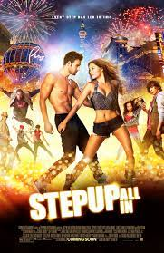
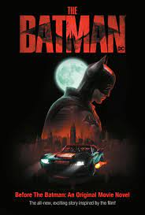

LITTLE:Jordan Sanders, a successful businesswoman who treats her employees poorly, wakes up one morning to discover that she has been transformed into her 13-year-old self, who was constantly bullied.
FIFTH WAVE:With the human race at the risk of getting wiped out owing to an alien invasion, Cassie, one of the few survivors, decides to risk everything to find her younger brother, Sam.
GIRLS TRIP:When Ryan is invited to speak at the annual Essence Festival, she sees it as a chance to reconnect with her best friends Sasha, Lisa and Dina, and the girls set out on a trip to New Orleans.

STEP UP ALL IN:After a long struggle, Sean gets an opportunity to participate in an upcoming dance competition. He teams up with two talented dancers and his old crew to win the competition

THE BATMAN:Batman ventures into Gotham City's underworld when a adistic killer leaves behind a trail of cryptic clues. As the evidence begins to lead closer to home and the scale ofthe perpetrator's plans become clear, he must forge new relationships, unmask the culprit and bring justice to the abuse of power and corruption that has long plagued the metropolis.
WAR ROOM:The Jordan family looks ideal on the surface, yet has many cracks underneath. When Miss Clara observes this, she tries to guide them and help them unite again with the help of prayer
SHAFT:Shaft is a 2019 American action comedy film film directed by Tim Story and written by Kenya Barris and Alex Barnow. The film stars Samuel L. Jackson, Jessie T. Usher, Regina Hall, and Richard Roundtree. It is the fifth film in the Shaft series and a direct sequel to the 2000 film with the same title.